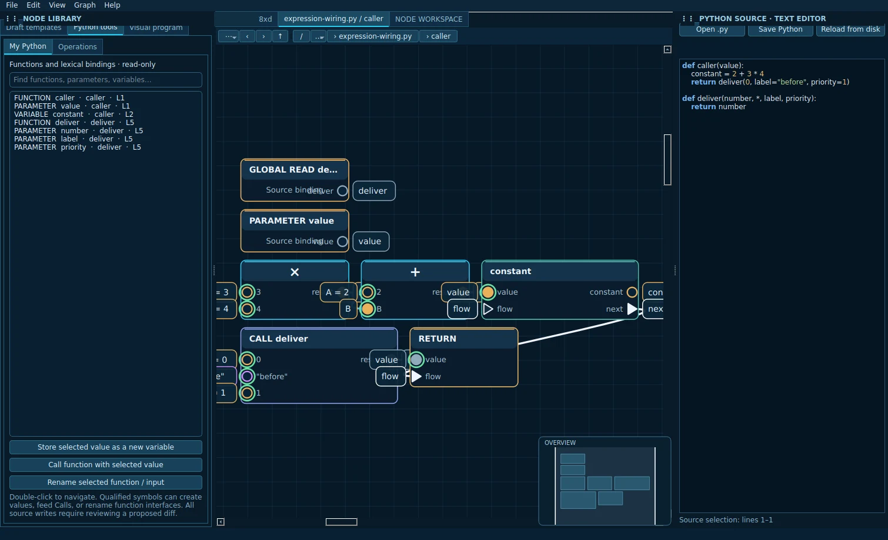
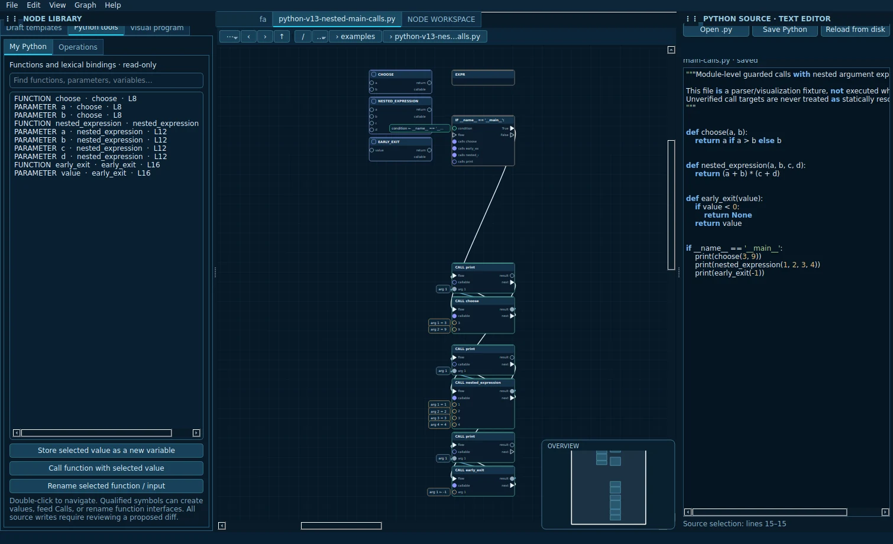

02 / SOURCE + GRAPH
Connections with meaning.
Typed data and execution paths expressed as a navigable graph.
SUPERIOR MI LABS / DEVELOPMENT PROJECT
A new kind of developer workbench where source code, typed node graphs, and project resources belong to the same connected workspace.
Python-first today. Designed for an extensible, multi-language future.
01 / THE WORKBENCH
Actual Qt application captures from the v2.120 native qualification. Sensitive local paths have been redacted.

Typed data and execution paths expressed as a navigable graph.

Project resources and source structures share one visual presentation language.
02 / DESIGN PRINCIPLES
We are building for maintainability as much as visual expression. Unproven transformations are refused, not guessed.
Read Python as code and as supported graph structures. Edit qualified native graph programs without silently rewriting source.
Inspect supported files, relationships and previews through shared graph descriptors and navigation.
Document revisions, explicit diagnostics, guarded writes and regression tests protect developers' work.
Studio is pre-alpha. Arbitrary Python round-tripping, general compilers and debuggers, cross-language editing, and a public extension API are not released capabilities. We publish this distinction intentionally.
Read the full roadmap ↗03 / DIRECTION OF TRAVEL
The current refactor is an architectural investment. The roadmap reflects intent, not promised dates or release commitments.
Consolidate document/graph ownership, Python compiler proof, UI navigation and native qualification.
More visual authoring, safe code reconciliation, diagnostics, tasks, test running and debugger hooks.
Language adapters, file capabilities, manifest-driven extension contracts and tooling integration.
Qualified desktop builds, packaging, documentation, stable updates and a contributor ecosystem.
04 / BUILD WITH US
Superior MI Studio is an independent development effort. We welcome engineers, testers, designers, documentation contributors, potential maintainers, and organizations interested in supporting the work.
No donation checkout is offered. Sponsorship and contracting inquiries are handled directly; no tax-deductible donation status is claimed.